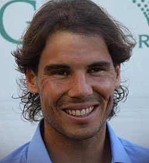
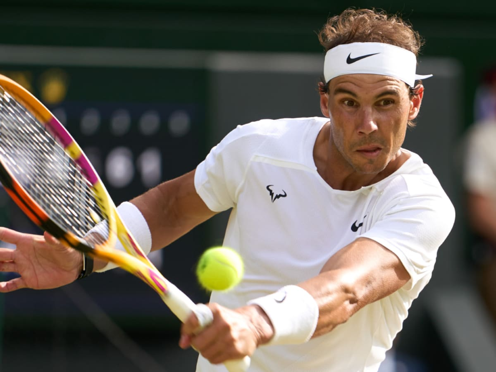

Рафаель Надаль

Рафаель Надаль — іспанський тенісист-професіонал, перша ракетка світу,
з перервами, від 18 серпня 2008, переможець рекордних серед чоловіків 22 турнірів Великого шолома, володар кар'єрного
Великого шолома, дворазовий олімпійський чемпіон, багаторазовий переможець турнірів серії Мастерс.
Рафаель Надаль унікальний тим, що він від природи правша, але грає в теніс лівою рукою. До цього його спонукав дядько та
незмінний тренер Тоні Надаль, коли Рафаелю було 12 років, з метою використати перевагу, яку має шульга в грі з праворуким тенісистом.
Основні заслуги

Надаль 14 разів виграв Ролан-Гаррос, 2 — Вімблдон, 2 — Відкритий чемпіонат Австралії та 4 — Відкритий чемпіонат США.
Золоту олімпійську медаль та звання олімпійського чемпіона він виборов на Олімпіаді 2008 року, що проходила в Пекіні.
Другу золоту олімпійську медаль Надаль отримав на Олімпіаді в Ріо-де-Жанейро, цього разу в парній грі разом із Марком Лопесом.